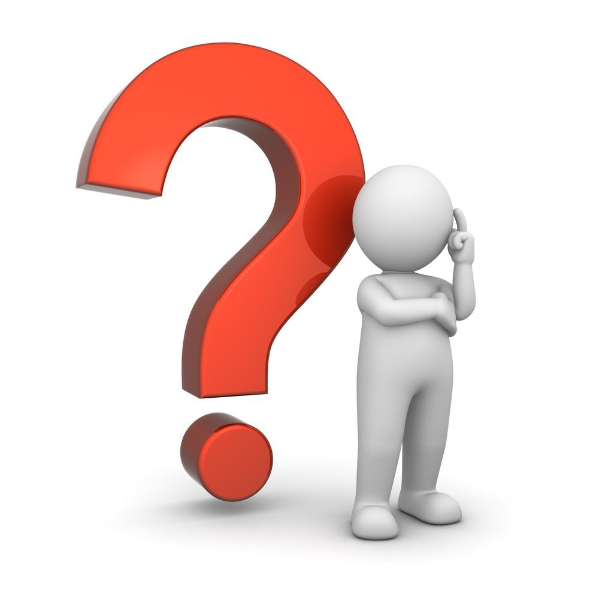

Автор - Сторчак Николай.
Первый смысловой элемент
Хотя смысла нет ни в одном из них, но они выглядят полезными. Вот картинка с котом:
Второй блок
Может возникнуть вопрос: "Зачем кот на личном сайте?"

Потому что это не личный сайт.
Часть 3. Деревья
Сакура - неприхотливая декоративная вишня (черешня). Это своего рода символ Японии. Её можно встретить в Японии повсюду: в горных районах, по берегам рек, в городских и храмовых парках. Праздник цветущей сакуры - один из древнейших обрядов японцев.
Подсолнечник - неприхотливое растение с жесткими треугольными листьями и широкой корзинкой, состоящей из центрального диска с трубчатыми цветками, окуженного венцом желтых язычковых цветков.
Топинамбур - земляная груша, многолетнее клубненосное растение семейства сложноцветных. Наземной частью напоминает подсолнечник.
Номер 4
Вот тут уже правда ничего полезного нет.
Хотя можно было в данном блоке предоставить еще один набор полезной информации.
Но я не буду.
\|/ Линия \|/
Контакты:
- Телефон: +7(xxx)xxx-xx-xx
- E-mail: email@email.com
- Личный кабинет СахГУ